マイクロソフトのチュートリアル通り進めると「映画の情報を管理するアプリ」が完成します。
こいつを読み解きながら、作成して行こうと思います。
前提条件
- Visual Studio 2019
Visual Studio を使って作業して行くので、事前に使えるようセットアップしておきましょう。
- Docker Desktop
今回は Docker システムを使ってみたいのでインストールしておきます。SQL Server も Webアプリ も Docker 上で動作させます。ちょっとカッコいい。
プロジェクト作成
まず初めに Webアプリケーション のプロジェクトを作成します。
Visual Studio を実行し「新しいプロジェクトの作成」を選択します。
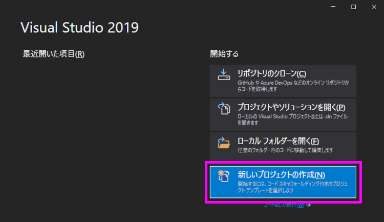
プロジェクトのテンプレートに「ASP.NET Core Web アプリケーション」を選択し「次へ」ボタンを押します。
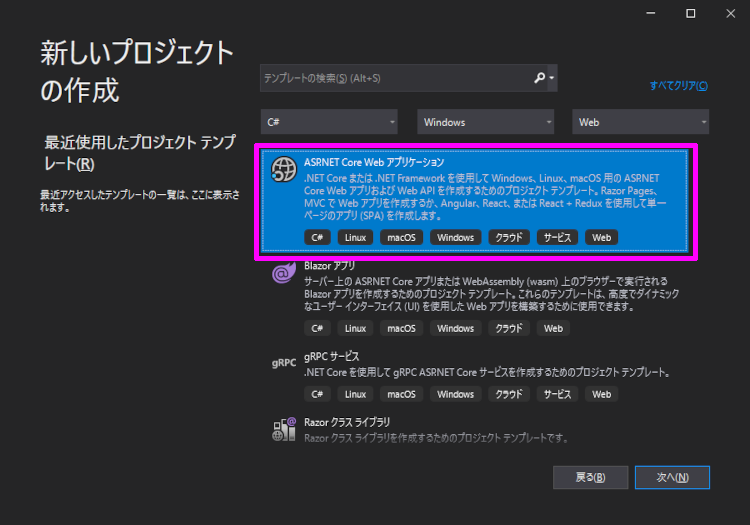
プロジェクト構成を確認して問題がなければ「作成」ボタンを押します。
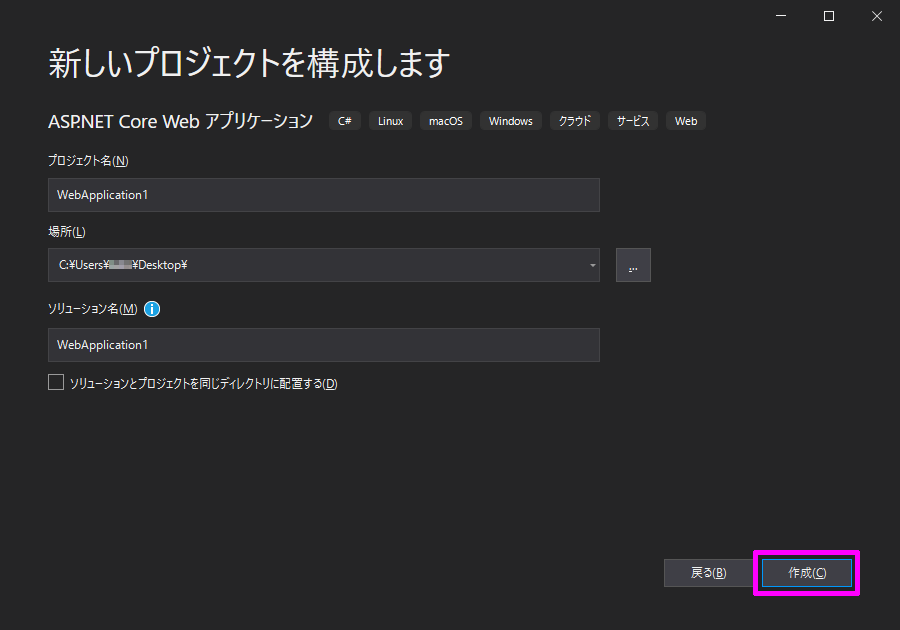
下記のようにアプリケーションを設定し「作成」ボタンを押します。
- フレームワーク：.NET Core
- フレームワークバージョン：ASP.NET Core 3.1
- プロジェクトテンプレート：Web アプリケーション (モデル ビュー コントローラー)
- 認証：なし
- HTTPS構成：チェックあり
- Docker サポート：チェックあり
- Docker サポート OS：Linux
- Razor runtime：チェックあり
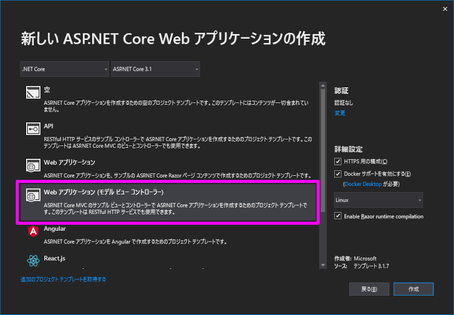
プロジェクトの作成が出来たら「デバッグの開始」ボタンを押して、正常に動くことを確認します。
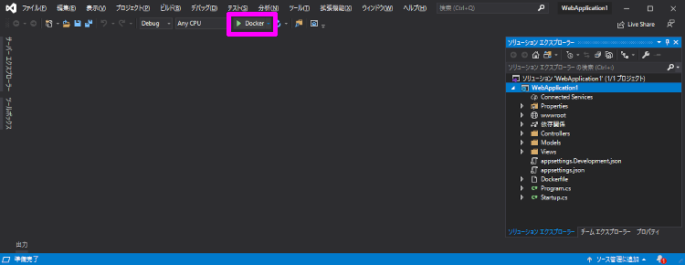
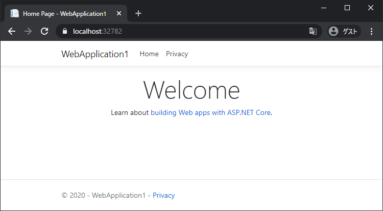
モデル作成
映画を管理するクラスを作成します。
また、モデルクラスは Entity Framework Core (EF Core) を使ってデータベースを操作します。EF Core は、データアクセスをする マッパー なので簡単に 追加・更新・削除 の機能を実装することができます。
「Models」フォルダを選択し、マウスの右クリック を押します。
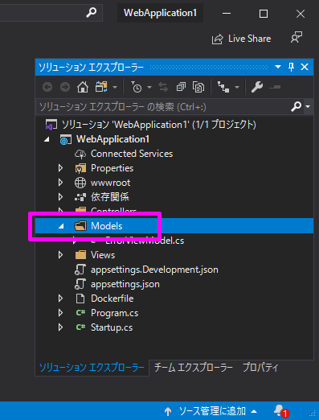
コンテキストメニューから「追加 -> クラス」を選択します。
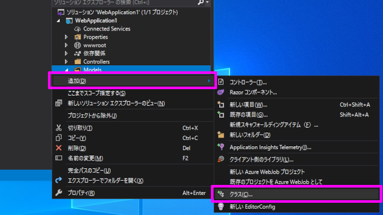
名前を「Movie」に変更し「追加」ボタンを押します。
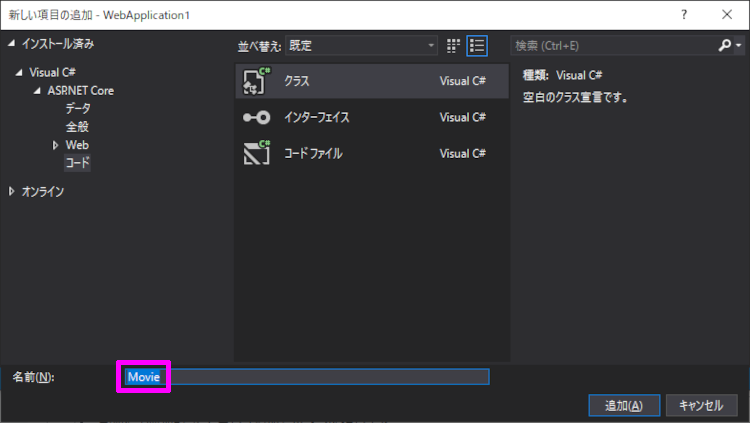
Models フォルダ内に Movie のクラスファイルが追加されました。
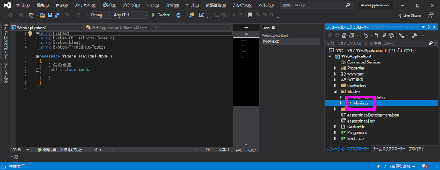
Movie クラス に 下記プロパティを追加します。
1 | using System; |
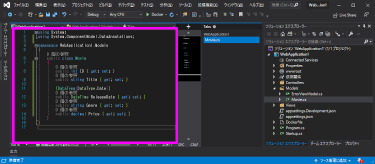
スキャフォールディング
次に、今作った Movieモデル を スキャフォールディング します。
スキャフォールディング を実行すると、Movieモデル の 作成・読み取り・更新・削除 ページが自動生成されます。
まず「Controllers」フォルダを選択し、マウスの右クリック を押します。
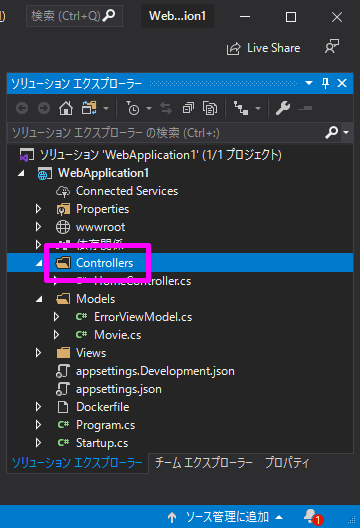
コンテキストメニューから「追加 -> 新規スキャフォールディングアイテム」を選択します。
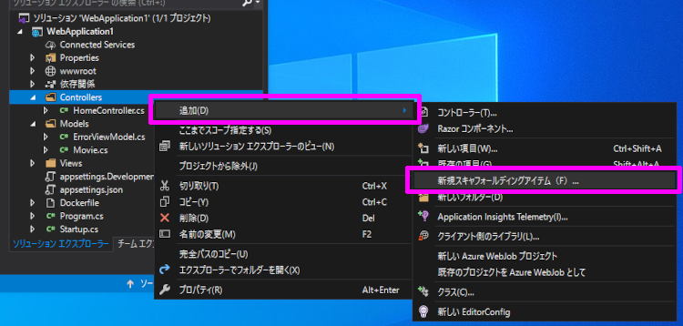
新規スキャフォールディング アイテムの追加で「Entity Framework を使用したビューがある MVC コントローラー」を選択し「追加」ボタンを押します。
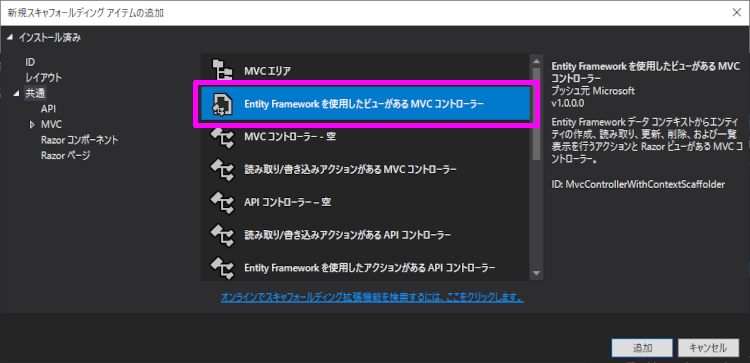
「Entity Framework を使用したビューがある MVC コントローラー の追加」画面の設定をしていきます。
まず「モデル クラス」に「Movie (WebApplication1.Models)」を設定します。
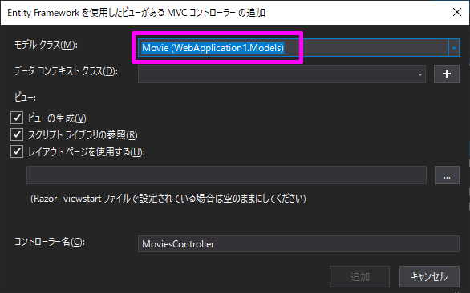
次に「データ コンテキスト クラス」の 「＋ (プラス)」ボタンを押して、データ コンテキストの追加をします。
特に変更せず「追加」ボタンを押します。
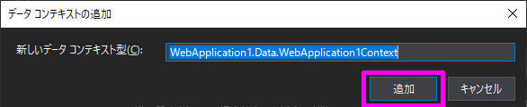
最後に下記設定をして「追加」ボタンを押せば、スキャフォールディング が実行されます。
- ビューの生成：チェックあり
- スクリプト ライブラリの参照：チェックあり
- レイアウト ページを使用：チェックあり
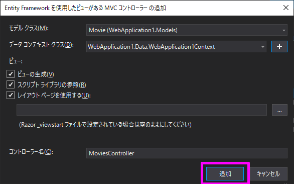
NuGet のインストールがあるので少し時間はかかりますが、下記ファイルが作成されれば成功です。
- Controllers -> MoviesController.cs
- Models -> Movie.cs
- Views -> Movies -> Create.cshtml
- Views -> Movies -> Delete.cshtml
- Views -> Movies -> Details.cshtml
- Views -> Movies -> Edit.cshtml
- Views -> Movies -> Index.cshtml
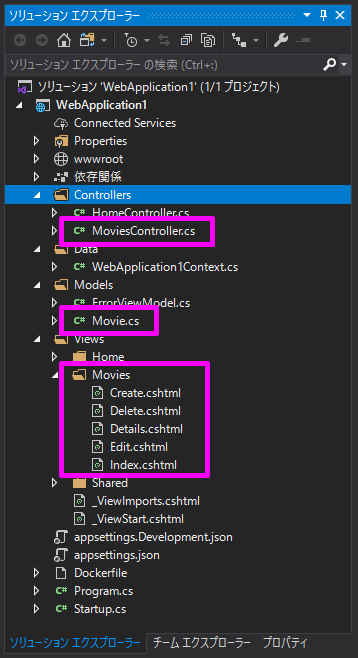
接続文字列の修正
次の工程に進む前に、接続文字列の修正をします。
先程の スキャフォールディング で「appsettings.json」に 接続文字列 が追加されました。
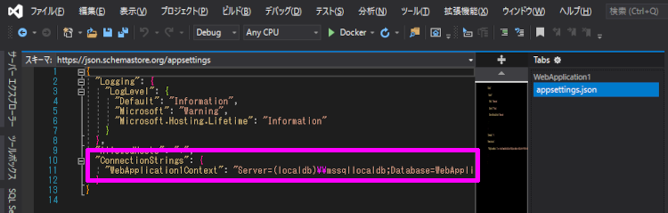
1 | "ConnectionStrings": { |
今回は SQL Server につなぐので 下記に修正します。
1 | "ConnectionStrings": { |
データベース作成
今回使う データベース を作成しておきましょう。
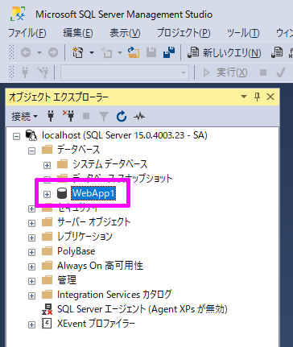
テーブルは次の工程で作成されますが、データベースは無理なのです。ちょっと残念。
自動テーブル作成
移行 SQL 作成
次に、今作った Movieモデル の移行 SQL を自動生成させます。
テーブル作成 SQL が自動生成されるので、楽ちんですよ。
「ツール」>「NuGet パッケージ マネージャー」の順で パッケージ マネージャー コンソール (PMC) を開きます。
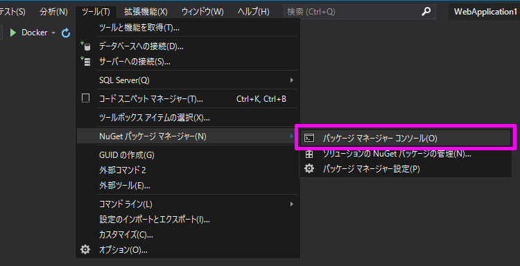
開いた パッケージ マネージャー コンソール に下記コマンドを入力して 移行 SQL を作成します。
1 | Add-Migration InitialCreate |
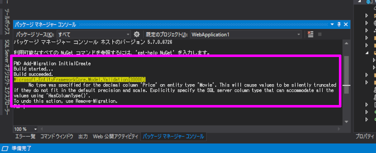
プロジェクト内に「Migrations」フォルダが作られて、そのフォルダ内に 2つ の 移行ファイルが出来上がります。
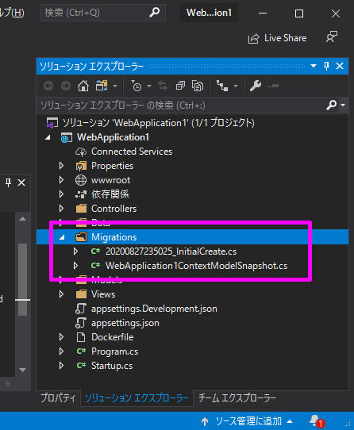
自動テーブル作成
出来上がった移行ファイルを実行して、テーブルを作ります。
パッケージ マネージャー コンソール に下記コマンドを入力すると、テーブルが作成されます。
1 | Update-Database |
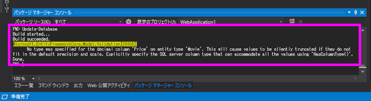
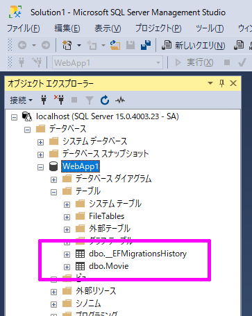
ちなみに「dbo.__EFMigrationsHistory」はテーブルの移行履歴です。
モデルクラスを変更して、再度自動生成をした時に変更分だけが更新されるようになっているので、安心です。
動作確認
映画の情報を管理するアプリ が完成したので、実際に動かして動作確認をします。
デバッグ実行をして「https://localhost:32770/Movies/」にブラウザからアクセスすると、今回作成したページが表示されます。
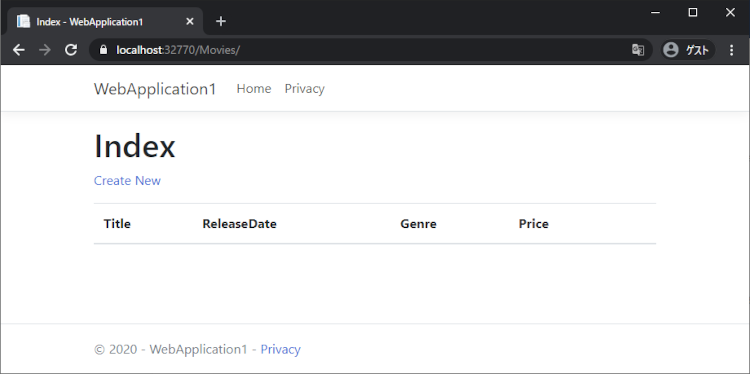
追加・更新・削除 も問題なく動きます。
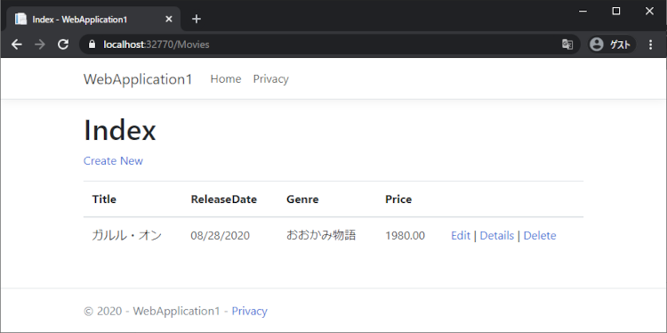
SQL Server に接続出来ない時は？
Docker の SQL Server を使っている場合、下記エラーが表示されるかもしれません。
An unhandled exception occurred while processing the request.
SqlException: A network-related or instance-specific error occurred while establishing a connection to SQL Server. The server was not found or was not accessible. Verify that the instance name is correct and that SQL Server is configured to allow remote connections. (provider: TCP Provider, error: 40 - Could not open a connection to SQL Server)
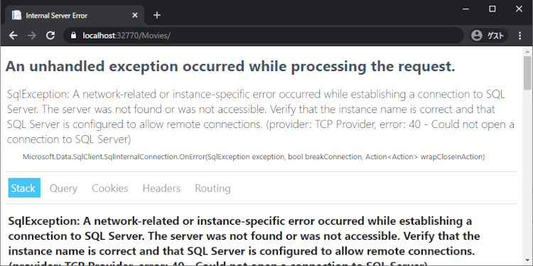
対処方法を下記にまとめたので修正します。
接続文字列の修正
エラーの原因は Docker上の SQL Server につなげれないためです。
Docker は DNSサーバー を有しているので IPアドレス を指定してあげないと つなぐことが出来ないみたいです。
How to connect to SQL Sever docker container from another container?
これに気づかず躓いたので気をつけポイントですね。
まず、SQL Server の コンテナ名を調べます。
Docker Dashboard にあるコレが SQL Server の コンテナ名 ですね。
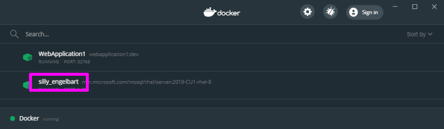
次に、下記コマンドで Doker コンテナー の ネットワーク ID を調べます。
1 | docker network ls |
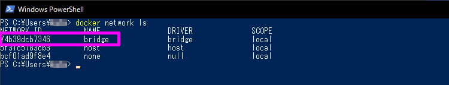
そして「bridge」の Network ID を コピーし、下記コマンドを実行します。
1 | docker network inspect 74b39dcb7346 |
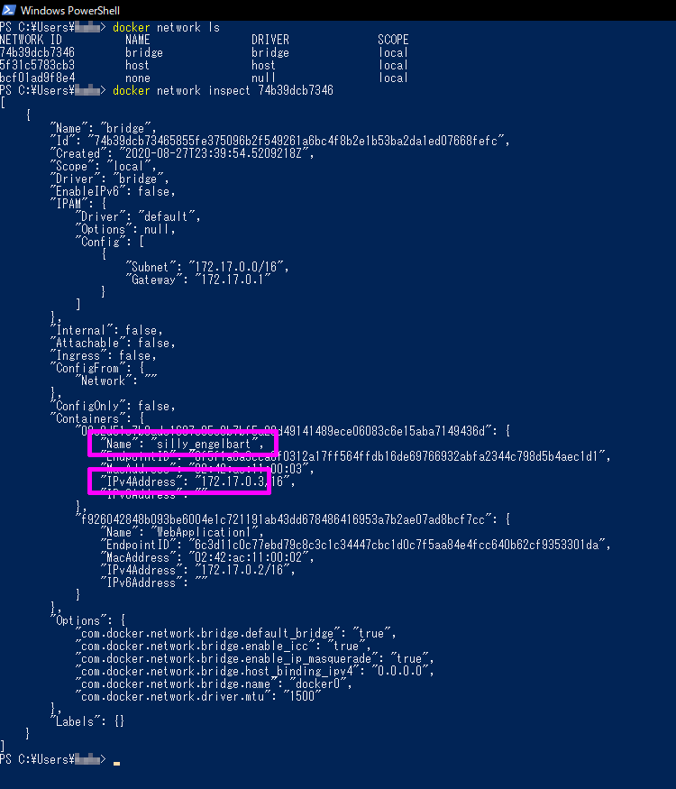
1 | "Containers": { |
「Containers」の中にある「IPv4Address」 が Docker上 IPアドレスになります。
あとは「appsettings.json」の「ConnectionStrings」を修正して完成です。
1 | "ConnectionStrings": { |
終わりに
SQL を一切書かずに 追加・更新・削除 の処理が作れたのに驚きました。
見た目はシンプルですが最低限の機能が備わっているので、あとは肉付けしていくだけですね。
Docker コンテナー になっているので、保守やメンテナンス・移行も簡単かもしれません。
Linux 上で展開できるのも魅力的だと思いました。
GitHub
今回作ったプロジェクトを置いておきました。よければどうぞ。
https://github.com/noitaro/aspnetcore-3-1-web-app-created